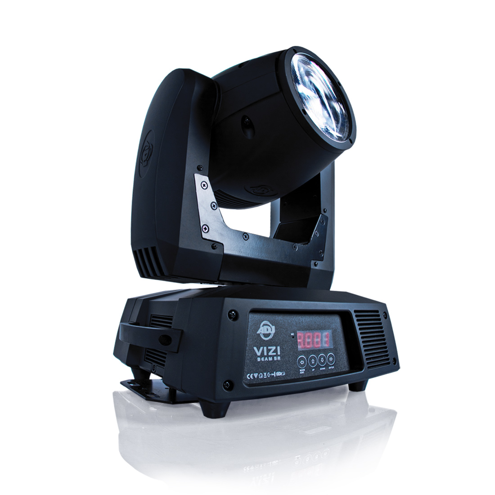

Use Case 01 - Remote All Candle light with DMX console !
Context: You have a candlelit concert, but you also want to integrate other DMX devices.
Solution: DMX console can Trun ON or OFF all your canlelit in one time !
Proof: TBDs.

DMX to IR mapping view.
Preset and signal diagnostics.
Use Case 02 - Draw on Candle lights remotly !
Context: You want to turn ON or OFF some candlelit to do a magical effect
Solution: Use a modified BEAM spot with IR lamp
Proof: TBD

DMX to IR mapping view.
Preset and signal diagnostics.
Use Case 03 - Draw yourself the Candle lights
Context: You want to draw yourself on the Candelit on the stage.
Solution: Use a IR flashlight with ON and OFF button.
Proof: TBD.
DMX to IR mapping view.
Preset and signal diagnostics.